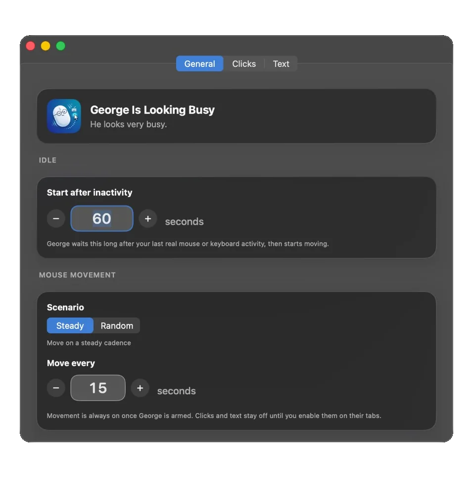

Waits until you are idle
Arm him and walk away. George watches for real mouse and keyboard use, then starts after the timeout you set. Or skip the wait and start immediately.
macOS 14+ · He looks very busy.
Simulates mouse and keyboard activity after you go idle.
George lives in the menu bar. When you stop using the Mac, he moves the cursor and can click or paste only where you said. Option-Shift-Esc if someone walks in.
Movement is always on once George is armed. Clicks and text stay off until you enable them. Nothing is clicked at random.

Arm him and walk away. George watches for real mouse and keyboard use, then starts after the timeout you set. Or skip the wait and start immediately.
Every N seconds, or a random wait. The cursor moves because you armed him, not because a screensaver kicked in.
You mark the spots. After a run of mouse moves, George clicks one of them, in order or at random. He only clicks what you added.
Clicks the spot you marked, pastes a line, can press Enter. Handy for a command in a terminal you already opened.
Typing bursts, the occasional hmm, a throat-clear. Optional. Toggle it from the menu extra.
Someone walks in. Option-Shift-Esc and George disarms.